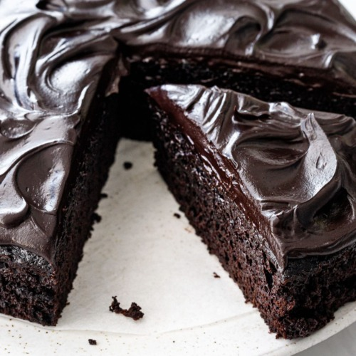

How to Make a Delicious Chocolate Cake!

Description:
Who doesn't like chocolate cakes? Right? Whether it's for a birthday or a
special celebration, chocolate cakes always brighten everyone's mood!
Ingredients:
- Sugar: 2 cups
- All-purpose flour: 1 ¾ cups
- Unsweetened cocoa powder: ¾ cup
- Baking powder: 1 ½ teaspoons
- Baking soda: 1 ½ teaspoons
- Salt: 1 teaspoon
- Eggs: 2 large
- Milk: 1 cup
- Vegetable oil: ½ cup
- Vanilla extract: 2 teaspoons
- Boiling water: 1 cup
Cooking Steps:
- Gather all the ingredients and preheat the oven to 350°F (175°C).
-
Grease and flour two 9-inch round
baking pans.
-
In a large bowl, stir together sugar,
flour, cocoa,
baking powder, baking soda, and
salt.
-
Add eggs, milk, oil,
and vanilla; mix for 2 minutes on medium speed with an
electric mixer.
-
Stir in the boiling water. The batter will be thin.
- Pour the batter evenly into the prepared pans.
-
Bake in the preheated oven until a toothpick inserted into the center
comes out clean, about 30 to 35 minutes.
Cool in the pans for 10 minutes, then transfer to a wire rack
to cool completely.
- Finally, after waiting long enough, eat and enjoy!
Final Words:
This is a special recipe too, as it was the first cake I ever made in my
life! Though I personally lost the recipe for it quite a while ago, I
found a similar one online (link given below) and decided to share it
here! Enjoy!
Special Thanks To:
AllRecipes Website: For the recipe reference
Go Back to the Homepage